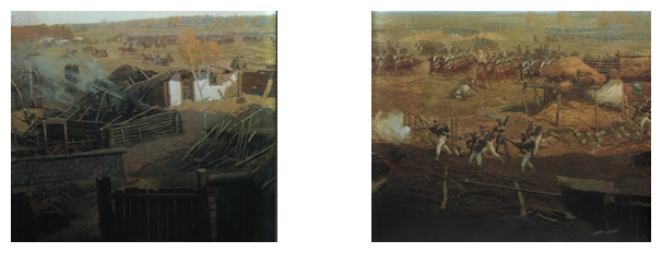

На задворках империи. В огне нашествия
В начале XIX века заштатное местечко Кобринского уезда Гродненской губернии Дрогичин и прилегающие к нему селения Заречка и Староселье начали постепенно приходить в упадок. Как и в других местечках Полесья в Дрогичине ограничилась торговля, земледельческое население вернулось к рутинному натуральному хозяйству. Многие промыслы, которыми ранее славился Дрогичин, исчезли. Востребованными оказались лишь соломенные шляпки, которые пользовались спросом в городах, и в Дрогичине была налажена небольшая мануфактура по их производству – первое предприятие нашего города.Значительную роль в угасании местечка сыграли зажиточные помещики – землевладельцы, которые стремились перехватить у европейских семей торговлю. Помещикам удалось даже построить дорогу (шлях) через Осовцы, Закозель. Осиповичи – в обход Дрогичина и Антополя. Отныне в имениях велась торговля, осуществлялся обмен, устраивались ярмарки.
В огне нашествия.
Тишину захолустной окраины Российской империи всколыхнула война 1812 года.Стремительное продвижение основных сил «великой армии» на Смоленском направлении приводило к оторванности от тылов и создавало угрозу всем наполеоновским коммуникациям со стороны расположенной в районе Ковеля III Русской армии генерала А.П. Тормасова. В конце июля 1812 г.Третья армия начала активные военные действия, атаковав Брест и выйдя к Белостоку.Оставленный Наполеоном в юго-западном Полесье корпус генерала Ренье был сосредоточен в Пружанах. Отсюда Ренье выдвинул в направлении Кобрина бригаду генерала Кленгеля. Узнав о действиях русских в направлении Пинска, Иванова со стороны Украины, Ренье с основными силами подошёл к Хомску. Отсюда он направил кавалерию к Лясковичам под Иваново, где она вступила в бой с отрядом русских под командованием А.П.Мелисино.
Узнав об окружении бригады Кленгеля под Кобрином основными силами III Русской армии Ренье двинулся на помощь. 26 июля 1812 г. Он свёл весь свой корпус, кроме кавалерии действовавшей в авангарде возле Иваново, под Дрогичин. Город за всю свою вековую историю не видел такого скопления людей. Утром 27 июля саксонцы выступили из Дрогичина в направлении Антополя. Их движение затрудняли 60 возов с награбленным провиантом.Вблизи Городца корпус был атакован и остановлен русской кавалерией генерала Е.И. Чаплица. Ренье отдал приказ своему авангарду покинуть Иваново и занять Дрогичин, прикрывать тыл корпуса. Однако 30 июля 1812 г. по приказу генерал-майора А.П.Мелисино майор П. Вильбак атаковал саксонцев в Дрогичине силами гусар Лубенского полка и двух рот егерей.
Наиболее кровопролитным был бой между Дрогичином и Старосельем. Саксонцы понесли потери и начали отступление из Дрогичина по Хомской дороге. 31 июля 1812 г. Весь отряд А.П.Мелисино перешёл в Дрогичин. Местечко стало главным лагерем и штаб-квартирой правого фланга III Русской армии. Из Дрогичина А.П.Мелисино отдавал распоряжения о действиях, приказал полковнику С.Э.Живахову занять мосты в направлении Антополя.
Так и не подступившись к Кобрину, где полностью была разгромлена бригада генерала Кленгеля, Ренье отдал приказ отступать через Антополь к Пружанам.А.П.Мелисино за мужество и умелое командование войсками, за занятие Иванова и Дрогичина был награждён орденом Святой Анны II степени (к оружию).В августе 1812 г. Наполеон, пытаясь спасти положение на Полесье, перебросил к Пружанам главные силы австрийского корпуса генерала Шварценберга, около 30 тысяч солдат. Часть этих войск выдвигалась против русского авангарда генерал-майора Е.И. Чаплица на Ревятичи – Хомск.

В боях и пожарах 1812 г.
Силы австрийцев и саксонцев в 4 раза превосходили численность русской армии. А.П. Тормасов поставил задачу соединить все войска под Кобрином и отходить на Волынь. Однако силы из под Дрогичина и Хомска не могли прибыть в Кобрин к указанному сроку. В сложившейся ситуации генерал Тормасов принял решение дать бой превосходящим силам противника под Городечно. Этим было выиграно время для отвода войск Е.И. Чаплица и А.П.Мелисино из под Дрогичина. Этот поступок А.П.Тормасова стал «образцом благородства и мужества русского офицера».После кровопролитного сражения под Городечно в середине августа 1812 года Дрогичин был занят австрийцами. В результате боевых столкновений часть местечка сгорела и была разрушена. По преданию саксонцы вырубили и сожгли вековую дубовую рощу к югу от местечка. Погибшие в сражениях под Дрогичином и умершие от ран были похоронены к западу от Староселья. Над могилой был насыпан курган. Польские источники называют его «курган 1812 г.»